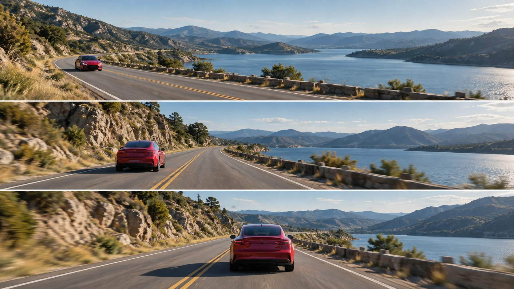

G11 · 중급 · 일반 드론
움직이는 자동차를 촬영하는 현장 접근
차량 경로와 카메라 경로, 화면 속 위치를 나누어 추적 장면을 분석하는 기준을 만든다.
그림에서 확인할 세 가지확인되지 않은 동선 대신 관찰 항목을 마련한다.
1차량의 앞쪽을 보는 구도
맨 위는 붉은 차량의 앞면과 그 뒤로 이어진 굽은 도로가 보인다. 차량이 다가오는 인상을 만드는 방향과 주변 경관의 비중을 함께 살핀다.
2차량 뒤로 이어지는 길
가운데는 차량의 뒷면과 앞으로 열린 도로가 함께 보인다. 앞 장면과 비교해 관객이 차량을 맞이하는지 따라가는지 시점의 차이를 읽는다.
3커진 차량과 줄어든 주변
맨 아래는 차량 뒷면이 더 크게 보이고 가까운 길 일부가 흐려져 있다. 차량의 존재감이 커지는 대신 주변 정보를 얼마나 잃는지 비교한다.
촬영 설계
촬영을 이렇게 설계한다
확인된 범위를 남긴다
제작자는 차량 촬영 경험을 공유하며 정적인 풍경이나 건물 촬영보다 어렵다고 설명한다. 차종별 속도, 기체 경로와 카메라 조작은 본문에 없어 제작 사실로 확정할 수 없다.
교육 적용 · 세 경로를 나눈다
차량이 실제로 가는 방향, 카메라가 움직일 방향, 화면 속 차량의 위치 변화를 따로 적는다. 실제 공간에서 같은 방향으로 움직여도 화면에서는 다른 변화가 생길 수 있다.
교육 적용 · 변화량을 줄인다
차량의 크기와 진행 여백을 동시에 유지하기 어렵다면 하나의 관계부터 관찰한다. 경로를 복잡하게 추가하기보다 속도·거리·시선 중 무엇을 바꿨을 때 문제가 생기는지 비교한다.
Drone Film Guide가 풍경과 건물보다 까다로운 차량 촬영의 경험을 소개하는 시연이다.
원본 영상움직이는 자동차를 촬영하는 현장 접근
1. 차량 크기
원본에서 차량이 차지하는 화면 크기를 비교한다. 주변 풍경이 줄어드는 변화와 차량의 존재감이 커지는 변화를 함께 본다.
2. 앞쪽 여백
차량의 진행 방향 앞에 남은 공간을 살핀다. 이동 방향을 예측하기 쉬운 구도인지 관객이 뒤늦게 따라가게 되는지 판단한다.
3. 시점과 경로
차량의 앞면·옆면·뒷면 중 무엇이 보이는지 관찰한다. 보이는 구도만으로 실제 기체 경로와 조작을 단정하지 않는다.
재생이 제한되면 원본 영상 새 창을 이용하세요.
제작진 설명 · 한국어 요약 번역
차량 촬영의 경험 소개와 구체적인 분석을 구별하다
제작자 소개
Stewart Carroll은 차량 촬영이 풍경·건물처럼 움직이지 않는 대상을 촬영하는 것보다 어렵고 기술적인 작업이라고 소개한다.
확인 범위
웹 본문은 경험을 공유한다는 수준이며 세부 경로나 운전자와의 협업 절차를 제공하지 않는다.
학습안 범위
따라서 차량·카메라·화면 위치를 분리하는 설명은 제작자의 발언 번역이 아니라 이 교안의 교육용 분석 제안이다.
Kling 프롬프트단문 인과 체인 · 16:9
내가 직접 만들어 본다
차량 경로와 드론 경로가 같으면 화면 속 크기가 유지되고, 속도 차이가 거리와 크기를 바꾼다는 인과를 지시한다.
- S01붉은 자동차가 굽은 도로를 달린다.
- S02영상은 하나의 연속 쇼트다.
- S03처음 10초 동안 드론은 자동차 뒤에서 같은 방향으로 난다.
- S04드론이 자동차와 같은 속도로 따라간다.
- S05그래서 자동차는 화면 아래쪽 같은 크기로 남는다.
- S06자동차 앞에는 열린 도로가 일정하게 보인다.
- S07다음 10초 동안 자동차가 갑자기 속도를 올린다.
- S08자동차만 빨라졌기 때문에 둘 사이 거리가 벌어진다.
- S09거리가 벌어지자 자동차는 화면에서 점점 작아진다.
- S10마지막 10초 동안 드론이 속도를 올려 따라붙는다.
- S11드론이 따라붙자 자동차가 다시 원래 크기로 돌아온다.
- S12그 결과 자동차 크기는 둘 사이 거리가 정한다.
[네거티브]
- 자동차가 직선 도로에 멈춰 서 있는 것 금지
- 영상 중간에 컷이 들어가 장면이 끊기는 것 금지
- 드론이 자동차 앞에서 마주 보며 나는 것 금지
- 드론이 자동차를 앞질러 버리는 것 금지
- 자동차 크기가 커졌다 작아졌다 하는 것 금지
- 도로 여백이 사라져 차가 화면 끝에 닿는 것 금지
- 자동차의 가속이 화면에서 읽히지 못하는 것 금지
- 드론도 같이 빨라져 거리가 그대로인 것 금지
- 자동차가 오히려 화면에서 커지는 것 금지
- 드론이 급하게 흔들리며 방향을 잃는 것 금지
- 자동차가 원래보다 훨씬 크게 화면을 채우는 것 금지
- 자동차 크기가 줌 때문에 변한 것처럼 보이는 것 금지
결과에서 볼 것
- 처음 구간에서 자동차 크기와 앞 여백이 유지되었는가
- 자동차만 빨라지자 거리가 벌어지고 크기가 작아졌는가
- 드론이 따라붙자 크기가 다시 돌아왔는가